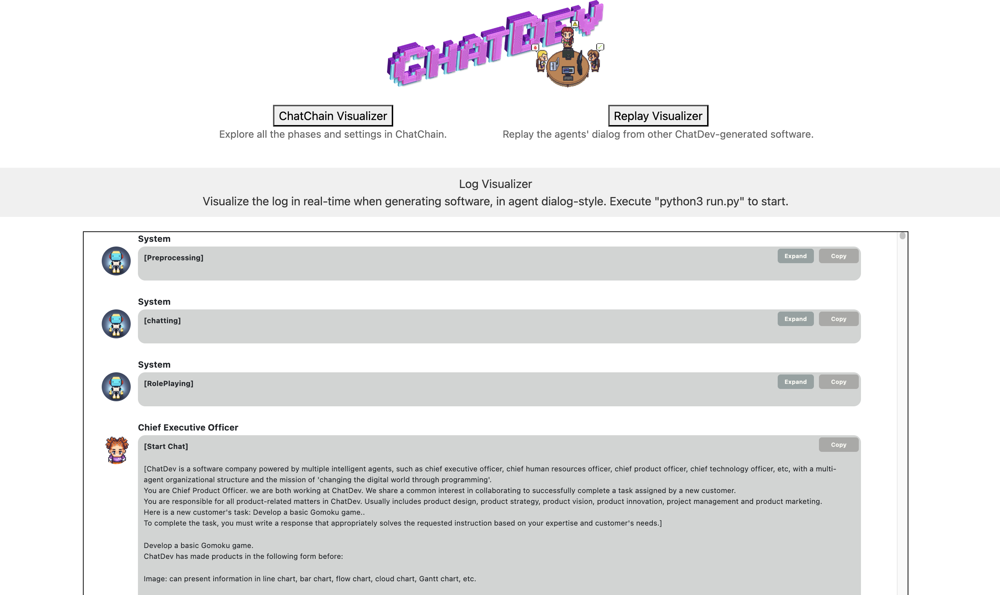
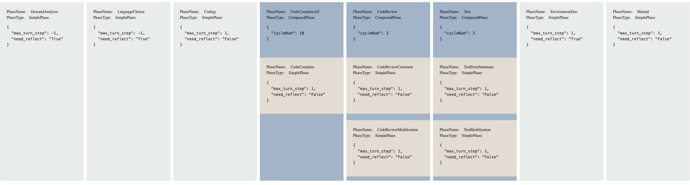

Use ChatDev ChatChain for agent communication on IBM® watsonx.ai®
Author: Vanna Winland
In this tutorial, we demonstrate how to build a collaborative AI system using the ChatDev framework, and explore its role-based agent communication structure, ChatChain. ChatDev uses AI agents with assigned roles to simulate a virtual software company. Each intelligent agent collaborates with others through structured communication, following a sequential workflow based on phases of the software development lifecycle.
To power these agents, we integrated the IBM® watsonx.ai® API as a model backend. Leveraging watsonx.ai® ‘s integration with Hugging Face, we configured the framework to use Llama-4-Maverick to generate a simple software solution. This example serves as a foundation for exploring ChatChain and other internal agent communication mechanisms that guide agent behavior and decision-making throughout the workflow.
By the end of this tutorial, you should have hands-on experience setting up and running ChatDev, and a clearer understanding of how agent communication protocols enable effective and reliable multiagent collaboration.
Collaborative AI - Artificial intelligence systems, often using deep learning or other advanced techniques, that are designed to work alongside humans or AI Agents, enabling cooperation and shared decision-making, and joint problem-solving to achieve common goals.
Multiagent collaboration - Multiple autonomous agents that share information and coordinate to accomplish a shared objective. These agents may have varying levels of knowledge, capabilities, and perspectives, and their collaboration often involves negotiation, planning, and coordinated action.
Role-playing agents – AI agents that simulate specific roles or personas to interact and collaborate in a goal-driven manner. These roles can reflect real-world professions or characters, enabling more context-aware and purpose-driven interactions.
Agent communication protocols - Standards or frameworks that define how AI agents interact with one another by exchanging structured data messages. These protocols govern the format, semantics, and rules of communication for agents coordinating within multiagent systems.
Collaborative AI in Chatdev
ChatDev is a role-based implementation of collaborative AI, where individual agents assume specialized roles to work toward a shared objective. This design reflects principles of collective intelligence— essentially effective collaboration—and positions ChatDev as a valuable resource for studying and advancing this field.
ChatDev is an opensource multiagent framework developed by OpenBMB, a research-driven initiative focused on advancing AI tools and artificial general intelligence (AGI). The framework uses the software development process as a practical domain for studying collaborative AI agents. Each agent is powered by a large language model (LLM) and prompted to take on specific roles such as CEO, CTO, Designer, Tester and Programmer.
Starting from a short, descriptive user input, these agents collaborate to iteratively design, implement, and test a complete software project. Each agent is implemented as a Python class that communicates sequentially using structured natural language prompts. These prompts follow predefined templates that includes the agent’s role, task-specific instructions, and relevant context from earlier interactions. This templating strategy ensures continuity and coherence by embedding role identity and shared memory within the prompt itself.
ChatDev’s team of specialized agents works together to generate a simple software solution from a one-line user input describing their idea.
User input: ‘Build a to-do list app’ → CEO delegates to CTO → CTO assigns to Developer → Developer writes code → Tester validates
How ChatDev works
Agent interactions are orchestrated by ChatChain, the custom coordination logic within the ChatDev framework. Communication between agents happens through a multi-turn dialogue, or message-passing system, where agents sequentially exchange structured JSON messages. These messages represent outputs and context updates and act as a shared memory buffer, allowing agents to build on each other’s outputs across development phases.
This architecture enables consistent communication and context-aware collaboration by blending natural and programming languages to complete the project end-to-end. The process relies on coordinated multiagent communication, with internal mechanisms acting as protocols to orchestrate effective AI agent communication to complete each phase.
Users can monitor and review the agentic workflow using ChatDev’s Visualizer tool, a Flask-based web interface that supports both post-run analysis and real-time monitoring. The Visualizer provides several modes, such as a Log Viewer to inspect real-time agent interactions, a Replay Viewer to visualize saved multiagent conversation logs, and a ChatChain Viewer to examine the task coordination flow. This interactive interface enables users to debug, experiment with, and study multiagent collaboration through a structured environment via a local browser.
Note on model compatibility and output variability
This tutorial uses a customized version of ChatDev adpated specifically for the IBM® watsonx.ai® API. While the core ChatDev supports multiple model providers, this version was modified using a pragmatic, “vibecoding” approach, making it functional but not exhaustively tested across all scenarios.
Key adaptations include:
- Wrapping the IBM® watsonx.ai® API to conform to ChatDev’s expected LLM interface.
- Adjusting prompt templates to work with IBM® watsonx.ai® API’s token and formatting requirements
- Modifying model selection logic to support IBM® watsonx.ai® as a model backend option.
This implementation demonstrates how ChatDev can be extended to support alternative LLM providers. Other model providers (e.g., OpenAI, Ollama) have not been tested with this customized version of ChatDev and would require code-level adjustments.
As with many generative AI workflows, output may vary between runs. While the agents generally produce coherent, well-structured code and documentation, the resulting applications may require manual refinement to become fully functional. Factors like prompt design, task complexity, and the inherent variability of LLM responses all contribute to this unpredictability.
This tutorial serves as a hands-on introduction to collaborative multiagent systems, focusing on how agents communicate and coordinate within ChatDev. It is not intended as a production-ready solution, but rather a foundation for learning, experimentation, and exploring LLM-driven agent collaboration. We’re grateful to the researchers behind ChatDev for open-sourcing their work, making this kind of exploration possible.
Steps
Step 1. Set up your environment
While ChatDev is designed to be cross-platform, users may encounter platform-specific issues during setup or execution. For example, PowerShell on Windows may require adjustments to shell commands intended for Unix-based systems. Variations in OS, Python versions, and CPU architectures can also affect performance or behavior. To ensure smooth setup and usability, users should consult the official ChatDev documentation and installation guides for troubleshooting and environment-specific instructions.
With that in mind, let’s begin by setting up the environment to run the application. You can follow these steps in the markdown file within the project folder on GitHub or by following along here.
- Ensure you have Python 3.11 installed on your system.
> You can check your Python version using thepython3 –-versioncommand. - Clone the GitHub repository. > For detailed steps on how to clone a repository, refer to the GitHub documentation.
- Verify the project structure resembles the following:
src/chatdev_watsonx/
├── camel/
│ ├── model_backend.py # Unified interface for interacting with multiple AI models
│ ├── typing.py # Defines various type classes including supported AI models
│ ├── configs.py # Defines the model parameters based on model interface
│ ├── utils.py # Various utility functions including model token limit configuration
│ └── ...
├── Visualizer/
│ └──app.py # Runs a Flask application in a local web browser to view logs and ChatChain
├── WareHouse # Where the generated software is saved
├── run.py # Application entry point
└── chatdev_watsonx.md # A markdown version of this tutorial
Step 2. Obtain watsonx API credentials
- Log in to watsonx.ai using your IBM Cloud account.
- Create a watsonx.ai project.
>Take note of your project ID in project > Manage > General > Project ID.
You'll need this ID for this tutorial. - Create a watsonx.ai Runtime service instance (choose the Lite plan, which is a free instance).
- Generate a watsonx API Key.
- Associate the watsonx.ai Runtime service to the project you created in watsonx.ai.
Step 3. Create a virtual environment
From the tutorial’s project directory create a virtual environment using Python 3.11:
python3.11 -m venv venv
source venv/bin/activate
Step 4. Install requirements.txt
This installs the project dependencies.
pip install -r requirements.txt
Step 5. Set environment variables for LLM integration
The variable is set for the current terminal session (closing the terminal will reset them).
Although this tutorial uses IBM® watsonx.ai® as the model backend, ChatDev’s
underlying framework was originally designed to support multiple LLM providers,
including a default, OpenAI. Some parts of the codebase (e.g., model selection
logic or shared interfaces) still reference the OPENAI_API_KEY environment variable.
To prevent runtime errors, a dummy value is required even if OpenAI is not used.
export OPENAI_API_KEY="your_openai_api_key_or_dummy_value"
export WATSONX_URL="https://us-south.ml.cloud.ibm.com"
export WATSONX_APIKEY="your_watsonx_api_key"
export WATSONX_PROJECT_ID="your_watsonx_project_id"
Step 6. (Optional) Run the visualizer app for the ChatDev interface
You may optionally run ChatDev’s Visualizer, a Flask-based GUI that allows you to inspect agent logs in real-time, explore the ChatChain workflow, or replay saved agent dialogues. This tool is useful for debugging, monitoring, or studying agent interactions, but it is not required to run ChatDev’s core multiagent workflow.
To launch the Visualizer, first install Flask:
pip install flask
Then run the app:
python visualizer/app.py
Once running, open a browser and go to: http://127.0.0.1:8000/
Step 7. (Optional) LLM Configuration
Note: This tutorial uses a version of ChatDev that is preconfigured to use the IBM® watsonx.ai® API as the model backend. No additional setup or changes to the model configuration is required for the tutorial to function correctly. While customizable, modifying LLM configurations may result in incomplete, incorrect, and varied outputs.
ChatDev is built on top of the CAMEL framework, which manages agent roles, tasks, and interactions with language models. The original implementation uses the OpenAI API as a model backend to interface with ChatGPT models, like GPT-4 and uses GPT-3.5-turbo by default. The opensource project is also designed to support multiple LLM providers models through a unified model interface.
Skip this step if you plan to use the default IBM® watsonx.ai configuration. For experimentation, model type, parameters, and token limits can be adjusted to work with the IBM® watsonx.ai® API.
- Model type
To experiment with different model types, update the WATSONX entry in the
ModelType enum in camel/typing.py.
```python # camel/typing.py
class ModelType(Enum): WATSONX = "meta-llama/llama-4-maverick-17b-128e-instruct-fp8" # Model identifier used by the Watsonx API ```
- Model Parameters
The model parameters can be configured within camel/configs.py under the
WatsonxConfig data class.
# camel/configs.py
@dataclass(frozen=True)
class WatsonxConfig:
"""Defines the parameters for generating completions using watsonx.ai models."""
temperature: float = 0.3
top_k: int = 100
top_p: float = 0.0
- Token limit
The token limit for the model can be configured in the camel/utils.py file.
# camel/utils.py
def get_model_token_limit(model: ModelType) -> int:
if model == ModelType.WATSONX:
return 128000 # Token limit for Watsonx.ai models
Step 8. Run the script to generate an app
This step runs the core ChatDev workflow. When you run this script, the agents
will simulate a collaborative software development process based on your input.
The generated code, documentation, and related artifacts will be saved in the
WareHouse/ directory of the project. You can inspect logs or replay conversations
using the Visualizer.
The script takes the following arguments:
-
–-task: The description of the desired software solution
-
–-name: The name of the app or project
-
–-model: The AI model to use (must be set to
WATSONXfor this tutorial)
Example script:
python3 run.py --task "Build a simple website using Flask for a local bookstore called 'Turn the Page'. The website should include a homepage, an about page, and a product page. " --name "bookstore-site" --model "WATSONX"
Note: Although ChatDev’s architecture is extensible, this tutorial version only
works reliably with WATSONX. Extending it to use other LLM providers requires
modifying the camel/model_backend.py interface and related configuration logic.
Example Output
The final software product is save in the WareHouse folder under a subdirectory
named after the project, default organization name, and a timestamp.
A typical output may look something like this:
├── WareHouse/
└── bookstore-site_DefaultOrganization_20250506162935/
├── templates/ # Web page templates
│ └── about.html
│ └── index.html
│ └── products.html
├── manual.md # The project’s README with instructions to run the software
├── main.py #The main application file for the website
├── requirements.txt # Project dependencies
├── ChatChainConfig.json # System design for collaborative agent workflows
├── RoleConfig.json # System prompts for agent roles
├── PhaseConfig.json # System prompts for phases
└── bookstore-site_DefaultOrganization_20250506162935.log # Log of the agent dialogue
*Output may vary between runs due to the probabilistic nature of generative AI tools.
This directory contains a complete software project generated by AI agents. Alongside the application code and documentation, you’ll find configuration files defining:
- Agent roles (RoleConfig.json)
- Development phases (PhaseConfig.json)
- Agent workflow (ChatChainConfig.json)
- A dialogue log that can be replated in ChatDev’s Visualizer
To run the app, follow the instructions in the manual.md file.

How ChatDev handles agent communication
Agent interoperability refers to the ability of autonomous agents to understand, communicate, and collaborate effectively using a shared protocol or standard. This capability is essential for scaling agentic AI systems across tasks, integrating large datasets, and solving complex problems cooperatively.
Multiagent systems often use Agent Communication Protocols (ACPs), which provide standards for agent to agent communication using internal communication mechanisms like Agent Communication Languages (ACLs), such as KQML or FIPA-ACL. These define standard “communicative acts” (e.g., inform, request, query) to enable structured dialogue and coordination in dynamic environments.
ChatDev, however, takes a different approach. It achieves agent interoperability through ChatChain, a communication mechanism that structures the agent coordination workflow. ChatChain manages a turn-based, synchronous flow of information between agents throughout all stages of the software development process. While not based on formal ACLs, ChatChain facilitates a protocol-like exchange using LLM-optimized conventions.
ChatDev’s agent communication relies on:
-
Prompt templating: At the start of each phase, the participating agents each receive a prompt structured with its role, current task, and relevant conversation history. ChatDev uses an inception prompting to embed this information directly into the prompt, helping maintain coherence and goal alignment across interactions.
-
Structured message formats: Agents communicate via structured JSON messages that encode outputs and context updates. This enables consistent data exchange and traceability throughout the workflow.
-
Role conditioning: Each agent is initialized with a prompt that reinforces its assigned role, including responsibilities, goals, and behavioral expectations— a key strategy in communicative dehallucination.
Together, these mechanisms form a lightweight, scalable communication framework that allows ChatDev to collaboratively generate software from a single user prompt. This illustrates how structured LLM-based collaboration can stimulate traditional multiagent workflows.
ChatChain
ChatChain is the core communication mechanism in ChatDev, orchestrating the sequence of agent interactions throughout the software development workflow. It structures collaboration into an iterative, chain-like process composed of distinct phases, each with specific goals and communication patterns.
During each phase, ChatChain initiates a dual-agent dialogue between two role-specific agents (e.g. CEO and CTO, Programmer and Reviewer). One typically acts as the instructor, the other an assistant. These structured, multi-turn exchanges streamlines collaborative decision-making while preserving clarity in clearly defined roles and responsibilities. Prompts for each phase embed task instructions, role identity, and relevant context to guide the interaction.
ChatDev’s overall workflow follows a modified waterfall model, a traditional software engineering methodology that breaks tasks up into three sequential phases: design, coding, and testing. The coding and testing phases are further divided into subtasks to reflect an iterative development process.
By default, ChatChain divides the workflow into the following ordered, automated steps:
- Demand analysis: Define the application’s structure and key components.
- Language selection: Decide what programming language to use to build and run the software.
- Coding: Agents write the code to build the application.
- CodeCompleteAll: Complete the code including missing functions/classes.
- CodeReview: Review and modify the code for functionality.
- Test: Run the software and modify the code based on the test report.
- EnvironmentDoc: Document the environment.
- Manual: Document and write a manual for the application.
Each phase is defined by a configuration object specifying attributes that define
its behavior and properties. For example, the need_reflect attribute triggers a
post-phase reflection where agents analyze and refine the results of the previous
interaction.

Inception prompting
To guide proper communication between agents, ChatDev uses inception prompting as an agent initialization strategy before each subtask round. Inception prompting is a prompt engineering technique that can be used to embed roles, goals, and responsibilities for effective agent communication.
Let’s look at an example of how inception prompting guides two agents to start, sustain, and conclude a subtask.
Example of inception prompting in ChatDev
Before each subtask, each agent receives prompts as parameters that define
role-specific instructions, characteristics, responsibilities and goals. Two
examples include assistant_role_prompt and user_role_prompt. These parameters
define the roles and responsibilities assigned to each agent participating in
the conversation, based on the context of the task.
Here are the system role prompts based on agent roles for the instructor and
assistant agent in the LanguageChoose phase, respectively:
// RoleConfig.json
{
"Chief Executive Officer": [
"{chatdev_prompt}",
"You are Chief Executive Officer. Now, we are both working at ChatDev and we
share a common interest in collaborating to successfully complete a task
assigned by a new customer.",
"Your main responsibilities include being an active decision-maker on users'
demands and other key policy issues, leader, manager, and executor. Your
decision-making role involves high-level decisions about policy and strategy;
and your communicator role can involve speaking to the organization's
management and employees.",
"Here is a new customer's task: {task}.",
"To complete the task, I will give you one or more instructions, and you
must help me to write a specific solution that appropriately solves the
requested instruction based on your expertise and my needs."
],
"Chief Technology Officer": [
"{chatdev_prompt}",
"You are Chief Technology Officer. we are both working at ChatDev. We share
a common interest in collaborating to successfully complete a task assigned
by a new customer.",
"You are very familiar to information technology. You will make high-level
decisions for the overarching technology infrastructure that closely align
with the organization's goals, while you work alongside the organization's
information technology (\"IT\") staff members to perform everyday operations.",
"Here is a new customer's task: {task}.",
"To complete the task, You must write a response that appropriately solves
the requested instruction based on your expertise and customer's needs."
],
These two prompts initialize the desired agent behavior by describing their role, expertise, and responsibilities. The prompt strategy also guides the behavior and responses of the respective roles during the interactions by giving tailored instructions on how to complete the assigned task.
Agent communication is effectively guided by careful prompts to ensure that both roles have clear expectations and can collaborate effectively.
Communicative dehallucination
To address potential coding hallucinations, (code generation that is incomplete or incorrect), ChatDev uses a communication pattern called communicative dehallucination. This pattern is essential to structure the conversation during the code review process.
The code review process involves two phases, CodeReviewCommentand
CodeReviewModification. The Code Review and Programmer agents perform iterations
between these two phases until two consecutive modifications are unchanged, or
after 10 rounds. Let’s look at an example of communicative dehallucination from
a project log.
Example of communicative dehallucination in ChatDev
In this example, the Code Review agent detects an error in the Programmer agent’s output and communicates it, along with a suggestion to correct the issue in the source code. The Programmer agent then corrects its original output based on that feedback.
Here is part of the Code Review agent’s output during an iteration of the
CodeReviewComment phase:
/* bookstore-site_DefaultOrganization_20250506162935.log */
...
## Step 7: Highest Priority Comment
A high-priority comment is that the templates directory needs to be created, and
the HTML files should be placed inside it for the application to find and render
them correctly. Without this setup, running `app.py` will result in a
`TemplateNotFound` error because Flask looks for templates in a `templates`
folder by default.
## Step 8: Instructions for Fixing
To fix this, create a new directory named `templates` in the same directory
where `app.py`
The Programmer agent responds with the corrected code during the next
CodeReviewModification phase:
/* bookstore-site_DefaultOrganization_20250506162935.log */
Here is the list of your developed codes: main.py, index.html, about.html, products.html.
### main.py
```python
...
### templates/index.html
```html
<!--
Homepage template for Turn the Page bookstore website.
Provides navigation links to other pages.
-->
...
</html>
### templates/about.html
```html
<!-- About page template for Turn the Page bookstore website.
Provides information about the bookstore and navigation links. -->
…
</html>
The Code Reviewer and Programmer either continue refining the code for up to 10 iterations or until consensus is reached after two consecutive, identical modification phases.
The communication dehallucination pattern ensures that the final code is accurate, complete, and aligned with the intended requirements through iterative refinement, while also facilitating the effective completion of subtasks.
Conclusion
In this tutorial, we explored how ChatDev enables collaborative AI by simulating a virtual software company composed of role-based AI agents. Using the IBM® watsonx.ai® API as the model backend, ChatDev guides agents through the software development lifecycle using structured communication in both natural and programming languages.
Although ChatDev doesn’t use a formal agent communication protocol, it achieves agent interoperability from the LLM’s natural abilities with agent communication techniques like ChatChain, inception prompting, and communicative dehallucination. This highlights the importance of orchestrating effective agent communication for successful collaboration and improve output quality.
With built-in visualization tools for monitoring and replaying agent interactions, ChatDev provides a powerful platform for studying multi-agent workflows and the dynamics of LLM-driven teamwork. It demonstrates the real-world potential of Collaborative AI in software creation and beyond.
Footnotes
[1] Qian, Chen, Wei Liu, Hongzhang Liu, Nuo Chen, Yufan Dang, Jiahao Li, Cheng Yang et al. "Chatdev: Communicative agents for software development." arXiv preprint arXiv:2307.07924 (2023).